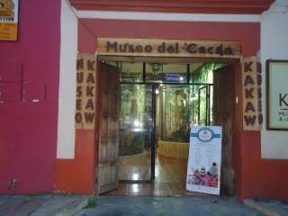
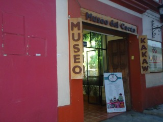
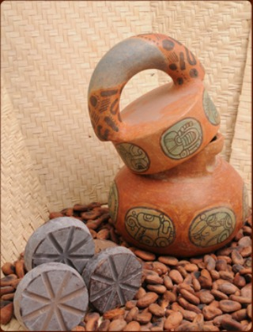
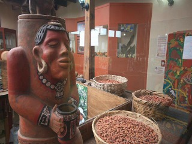
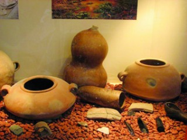

En este museo podrá entrar en contacto íntimo con los secretos que envuelven al cacao y al principal derivado de este valioso fruto, el chocolate. El Cacao es una aportación biológica de Chiapas a México y desde México se ha dado a conocer a todo el mundo.
El museo tiene como misión hacer del Cacao, un elemento para el beneficio de nuestra comunidad, contribuyendo al desarrollo económico, social y cultural de todas las personas involucradas en las actividades de siembra, cosecha, producción y comercialización del cacao y el chocolate. Aquí se documenta y muestra el enorme legado del Cacao y su evolución hacia el Chocolate, con representaciones tridimensionales y pictográficas de su botánica, su biología, su genética, su historia, sus vinculaciones sociales, arqueológicas y antropológicas, su valor nutricional, sus procesos de industrialización, su valor comercial, sus involucraciones psicoterapéuticas, entre otros varios aspectos.
Se encuentra ubicado en la Avenida Crescencio Rosas a media cuadra de la Plaza de la Paz.
Si usted se encuentra ubicado en la plaza de la paz viendo de frente hacia la catedral puede caminar dirigiendose hacia el banco banorte que se encuentra a la izquierda de la plaza de la paz, después de haber pasado por banorte al llegar la esquina de vuelta la derecha camine unos cuantos pasos y frente a usted encontrará el museo.
En el lugar usted puede realizar actividades como:
* Fotografía
* Visita a Museos





posicione el mouse sobre las imágenes